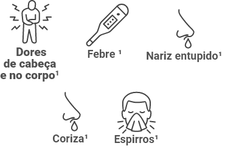
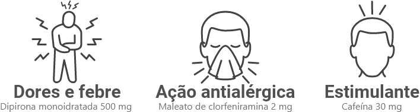

Agora também derruba
os sintomas da alergia!
Com dupla ação analgésica e antialérgica,
além de tratar os sintomas de gripes e
resfriados, Apracur Duo trata também os
sintomas da alergia!
ALÍVIO DOS SINTOMAS:


Formulação1:

Posologia1:
Uso adulto
Quer saber mais sobre o produto?


Derruba os sintomas da gripe sem derrubar você!
Sua fórmula contém vitamina C, que auxilia
na melhora mais rápida dos sintomas da gripe
e do resfriado5.